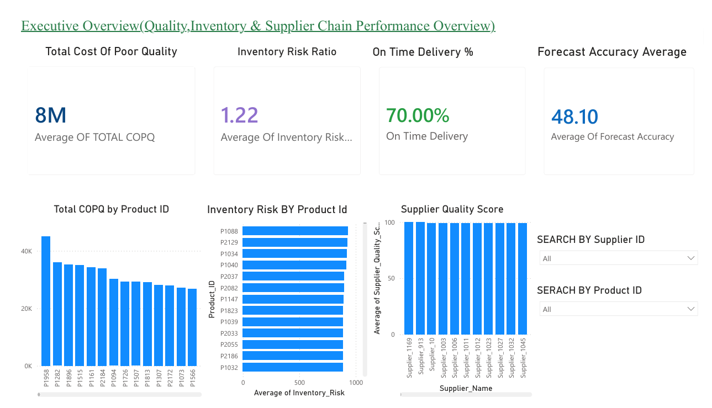
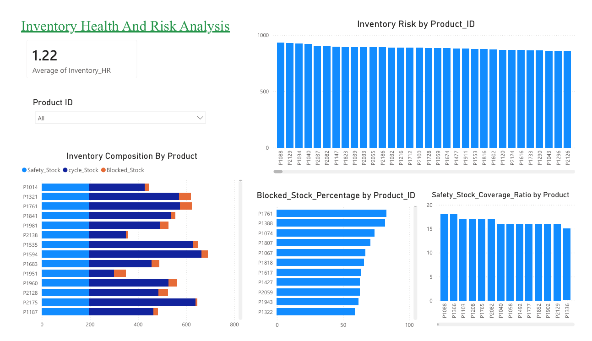
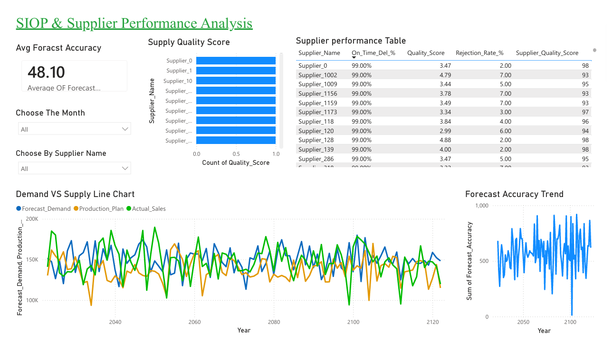
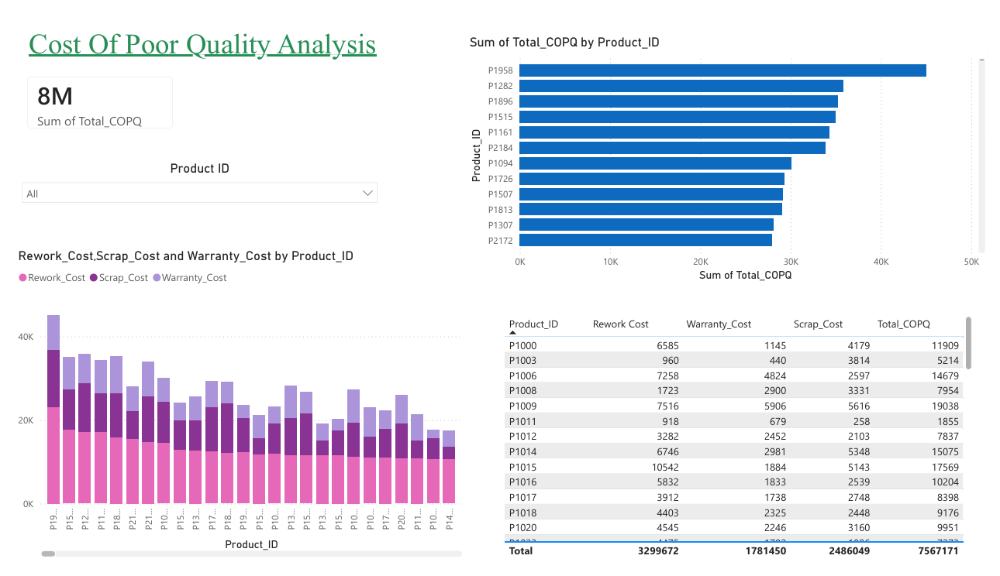
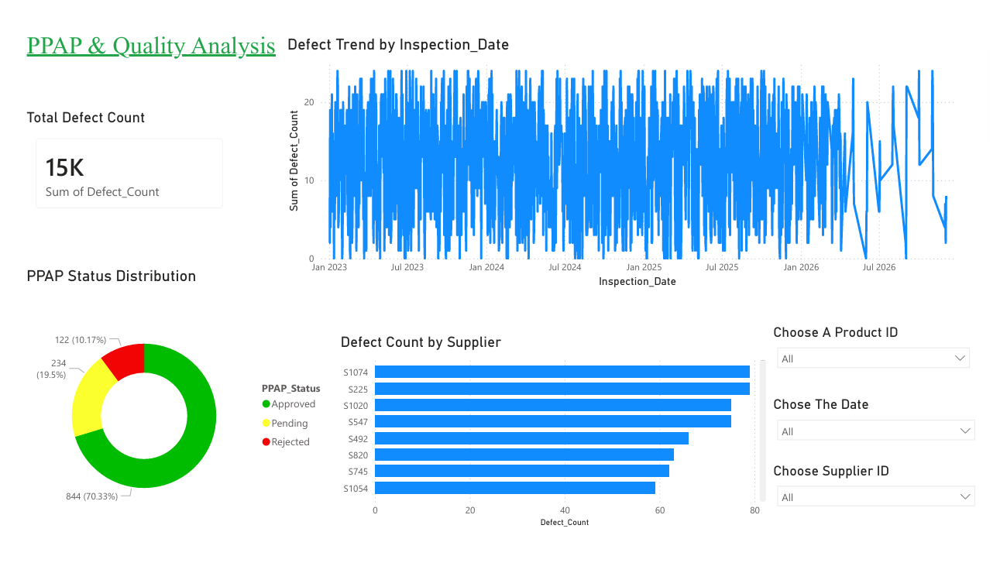

Data Analyst | Supply Chain Analytics
Excel • SQL • Power BI
Aspiring Data Analyst with hands-on experience in supply chain analytics. Skilled in data cleaning, SQL analysis, and building interactive Power BI dashboards to deliver business insights.
Built an end-to-end analytics solution to identify stock-outs, excess inventory, supplier quality issues, and Cost of Poor Quality (COPQ).





Email: bharathkiran715@gmail.com